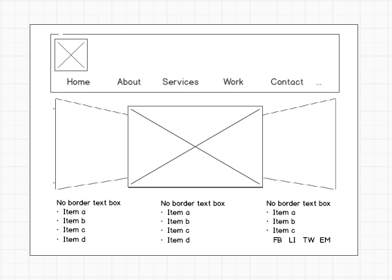
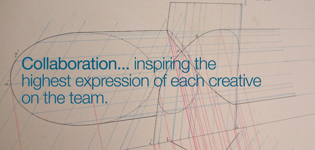
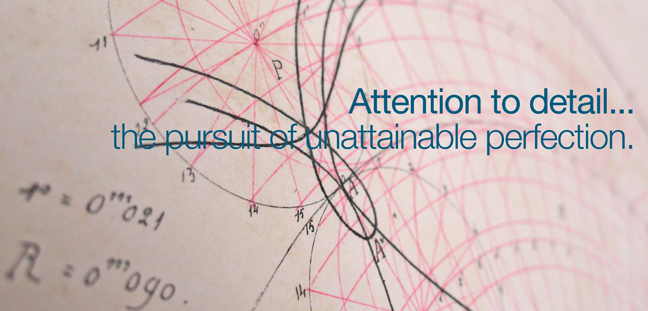
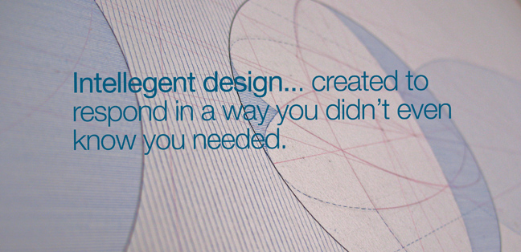
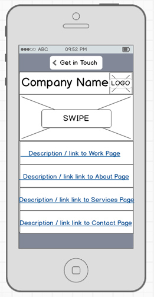
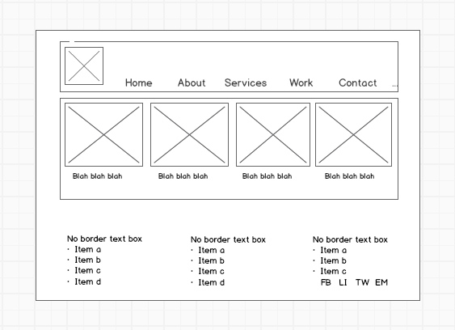

Laura Orchard Personal Website Project - Milestone III
Created by: Laura Orchard
Created for: Deep Dive Coding Bootcamp, PWP Project Milestone II
Date: May 9, 2015
URL: http://lorchard.org
Home Page - desktop:
Image 1 shows the Home Page desktop layout for lorchard.org. I prefer straight-forward layouts
for business sites, and for sites with multiple pages, I prefer seeing a complete overview on
the home page without having to scroll down (if possible). For this reason, I have a desktop
layout that provides visual interest, obvious links to additional pages, and basic information
all within one screen.
- The banner contains the logo as well as the company name. The page links are visually
incorporated into the banner container for simplicity. The banner will be included on all
page layouts for this site.
- The coverflow/carousel in the center of the page will have text overlays on top of
imagery - the text is informational, the imagery is artistic.
- The three borderless text boxes in the footer will contain information that is not
already contained in the pages themselves (social media icons, affiliations, partners,
collaborations, etc.) The footer will be included on all page layouts for this site.





Home Page - mobile:
Image 2 shows the Home Page mobile layout for lorchard.org. All but the footer will be visible
from the initial vertical view of my home page.
- The top panel shows a Get in Touch button that opens an alert box with my phone number,
so the user can press call from their phone.
- The stack view shows a logo banner, an image with a Learn More link to the About page, followed
by stacked panels for each of the other pages.

Work Page - desktop:
Image 3 shows the Work Page mobile layout for lorchard.org. In the beginning of my professional
web development, the portfolio grid may be sparsly occupied, but I anticipate that it will fill up
over time to expand down the page.
- The banner and footer are part of the site template.
- The portfolio boxes are Bootstrap components called Thumbnails With Custom Content.

Work Page - mobile:
Image 4 shows the Work Page mobile layout for lorchard.org.
- The top panel showing the Get in Touch button, the logo banner and the footer are in the
mobile template for this site.
- The stack rows show the Thumbnail With Custom Content component with alternating left and
right positioning for visual interest.